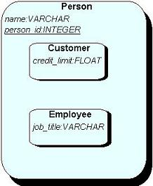
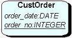
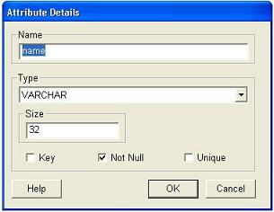
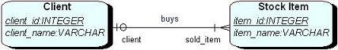
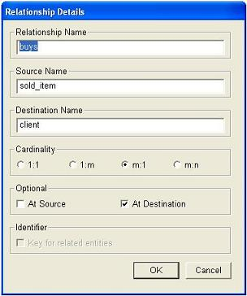
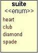
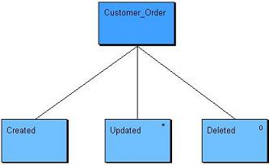
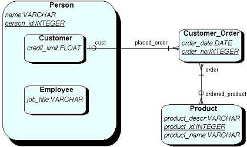

|
|
Entity Relationship Diagram
The Entity Relationship Diagram (ERD) tool provides a mechanism
for quickly and easily modeling data structures required by a software
system. The ERD tool provides all the usual features of a data modeling
tool and additionally provides reverse engineering and code generation
facilities. This allows a user to quickly create a database system
on a number of different target platforms without the need to write
any Data Definition Language (DDL) type code. Document Type Definition
(DTD) and XML Schema Document (XSD) code can also be automatically
generated. The ERD tool provides sub-typing and automatic foreign
key generation facilities. It also allows the user to select their
preferred graphical notation.
To view the main multi-CASE help page click here
|
|
|
|
Entity Relationship Diagrams
The ERD tool provides a number of simple modeling elements. These elements
are Entities, Attributes, Enumerated
Types and Relationships. Each entity contains
one or more attributes and may be related to other entities via relationships.
An entity life history (ELH) model may be
defined for each entity, which allows the dynamic behavior of the entity to
be described. The ERD tool provides facilities to reverse
engineer models from existing database systems and to generate code from
input models. During code generation a mapping
is performed from the input model to a form suitable for implementation on a
specific target. An example of a simple entity relationship
diagram is provided along with the code generated from the model.
An XML modeling tool is also available
that supports direct graphical modeling of XML Schemas and generation of DTD
and XSD code. The XML tool is better suited to the modeling of hierarchical
structures typically found within XML documents.

Entities
Definition: An entity is the primary graphical object on an ERD. Entities
provide a mechanism for grouping related attributes and typically represent
entities from either the real-world or from the problem domain for which the
database is being designed. An entity is often representative of a person, place,
concept, or object about which the business needs data. An entity's name
is usually singular and represents a grouping of related objects, e.g. an entity
named "Person" is appropriate, rather than an entity named "John"
(which is a specific instance of a person). An entity is a logical representation
of a table from a relational database system. An entity may also define
one or more exclusive arcs (shown as arc symbols adjacent to the entity).
These are used to indicate exclusivity across two or more relationships
connected to the entity. i.e. an arc crossing relationship links indicates that
only one of those relationships can be active at any one time. An entity may
also contain an underlying storyboard model
that allows for the definition of any graphical user interface requirements
related to the entity or its attributes.
Representation: An entity is shown using a rounded rectangular shaped
node containing the name of the entity, a list of contained
attributes and any contained sub-types. e.g.


The ERD tool also presents visual cues to indicate that an entity has no
defined attributes, and additionally that it has no attributes which are
specified as being identifiers for the entity. These allow a user to
easily spot entities that are "incomplete" in their definition. An entity is
shown with a dashed outer line if it has no defined attributes, and a dotted
outer line if it has no identifying attributes.
Creation: An entity is added by right clicking on an ERD model diagram
editor or on the ERD model icon within the project tree and selecting the "Add
Entity" option from the menu. Position the entity outline where you wish
it to be placed on the diagram and left click, enter the name when prompted
and click "OK". If an entity is positioned within an existing entity
on the model then the new entity is created as a sub-type
entity.
Rules: An entity's name must be present and unique within the model
(with respect to all other entities). If an entity name clashes with a name
commonly used by target a database system then a warning is shown (to help prevent
the generation of invalid program code). An entity should have at least one
attribute that is specified as being the identifier
(key).
Operations: Move Forwards/Backwards, Bring to Front, Send to Back, Delete,
Add Attribute, Modify Attribute, Delete Attribute, Add Relationship, Add Sub-Type,
Add Exclusive Arc, View Entity Life History, Create/View/Delete Underlying Storyboard,
Change Text/Entity Color and Edit Entity Annotation/Name.
Sub-Type Entities
Definition: A sub-type entity is similar to a regular
entity except that is defined within an existing entity
rather than directly on the ERD itself. The outer entity is often referred to as
a super-type. A sub-type inherits the attributes defined within its super-type(s).
A sub-type is allowed to define its own additional
attributes, although its identifying attribute (key) is inherited from its
super-type entity. Sub-type entities are useful when several entities are being
modeled that have common data storage requirements and/or relationships. i.e.
all attributes which are common to several sub-types are placed within one
single super-type entity, rather than being duplicated within each sub-type.
Sub-types can themselves contain sub-type entities (to any level).
Representation: A sub-type is shown in exactly the same way as an
entity, but it is contained within another (super-type)
entity, e.g. the following sub-type entities, Customer and Employee, inherit the
'name' and 'person_id' attributes from the super-type Person entity. Then
additionally define their own specific attributes.

Creation: A sub-type entity is added by right clicking
on an existing entity or on an entity icon within the project tree and selecting
the "Add Sub-Type" option from the menu. Position the entity outline
where you wish it to be placed within the super-type and left click, enter
the name when prompted and click "OK". A sub-type entity may also
be added by adding an entity as normal, but positioning
it within an existing entity on the model.
Rules: A sub-type entity must be named with a unique
name (like a regular entity). Sub-types may not contain an attribute which
is defined as being the identifying (key) attribute.
Operations: Move Forwards/Backwards, Bring to Front,
Send to Back, Delete, Add Attribute, Modify Attribute, Delete Attribute, Add
Relationship, Add Sub-Type, View Entity Life History, Change Text/Entity Color
and Edit Entity Annotation/Name.
Back To Top
Attributes
Definition: An attribute is declared within an entity
to specify what data values are to be maintained by instances of the entity.
Attributes have a name, type and number of selectable constraints.
An attribute is a logical representation of a column within a database
table. An attribute name is typically singular and all lowercase. An attribute
type defines the nature and the range of values that may
be stored (types are predefined within the tool). Attributes identify the kind
of data to be stored rather than data itself, e.g. an attribute named "cost"
is appropriate, rather than an attribute named "$1.99" (which is a
value that may be assigned to cost). The selectable constraints available allow
the attribute to be specified as being -
- An Identifier (key)
This specifies that a value assigned to this attribute is to be used to
help identify each different instance of the entity. i.e. it acts as a unique
(or part of a unique) 'key' which allows entity instances to be individually
identified. e.g. a customer's "customer_number" may be specified as being an
identifier.
- Not Null
This specifies that a value must be assigned to this attribute within each
instance of the entity. i.e. a value must be given. This is usually specified
on attributes that must be assigned a value within a database. e.g. a person's
"name" is often specified as being not null.
- Unique
This specifies that the value assigned to this attribute must be different
to all other values assigned to this attribute across the set of entity
instances. i.e. the value must be unique when compared to all other values of
the same attribute. This is usually specified on attributes that must be
assigned a unique value within a database. e.g. a person's "logon id" may be
specified as being unique.
The types that may be specified for an attribute are shown
in the table below (note: certain types also take parameters). An enumerated
type may also be specified as being the type of an attribute.
| Type |
Parameter(s) |
Description |
Example value |
| CHARACTER(n) |
n - number of characters to be stored |
A fixed length string of characters (padded with blanks) |
"abcdef" |
| VARCHAR(n) |
n - max number of characters to be stored |
A variable length string of characters (not padded). Maximum size specified. |
"161 long drive" |
| LONG VARCHAR |
|
A variable length string with no maximum specified. (limited by underlying
DBMS) |
"This is a long string" |
| INTEGER |
|
A whole number |
16452 |
| SMALLINT |
|
A whole number (usually with smaller range than integer) |
2020 |
| TINYINT |
|
A whole number (usually with smaller range than smallint) |
100 |
| BIGINT |
|
A whole number (usually with larger range than integer) |
697682 |
| DECIMAL(p,s) |
p - Precision, number of significant digits
s- Scale, number of digits after decimal place |
A fixed point decimal number with a specified precision and scale. |
1154.21 |
| NUMERIC(p,s) |
p,s - as above |
A fixed point number (as above) |
1154.21 |
| FLOAT(p) |
p - Precision |
A floating point number with a specified precision. |
101.65 |
| REAL |
|
Single-precision floating point number |
100.765 |
| DOUBLE PRECISION |
|
Double-precision floating point number |
247618.212 |
| DATE |
|
A date value (stores year, month, day) |
2004-04-20 |
| TIME(p) |
p - Precision |
A time value (stores hour, minute, second). Precision p indicates the
seconds precision. |
"12:28:03" |
| TIMESTAMP(p) |
p - Precision |
A date and time value. Precision p indicates the seconds precision.
|
|
| BOOLEAN |
|
Represents true/false values. |
TRUE |
| BINARY(n) |
n - number of bytes to be stored |
Fixed length of binary data. |
<any_data> |
| VARBINARY(n) |
n - max number of bytes to be stored |
Variable length of binary data. Maximum size specified. |
<any_data> |
| BLOB |
|
Variable length of binary data with no maximum specified. (limited by
underlying DBMS) |
<any_data> |
Representation: An attribute is shown textually within its owning
entity in the form <name>:<type>. Additionally attributes that
are specified as the being an identifier (key) are shown underlined. e.g. the
following entity contains two attributes, order_date and
order_no. The latter of which has been specified as being an
identifier (key) for the entity.

Creation: An attribute is added by right clicking on an entity within
the model or on an entity icon within the project tree and selecting the "Add
Attribute" option from the menu. A dialogue box will be displayed that allows
the details of the attribute to be specified, such as the name, type and
constraints (as in the example shown below).

Rules: An attribute name must be unique within the scope of its
containing entity (including super/sub-types). i.e. the name of the attribute
cannot clash with any other attributes within the entity or any super/sub-types
of the entity.
Operations: Move Forwards/Backwards, Bring to Front, Send to Back, Delete,
Show Where Type Defined, Edit Attribute Annotation/Details.
Relationships
Definition: A relationship models an association between
entity types. Relationships are used to show that
instances of one entity may be related to instances of another entity. A
relationship is connected to exactly two entities; a source entity and a
destination entity. A relationship may be used to connect an entity to itself.
Each end of the relationship has a number of properties that specify constraints
on how instances of each entity may by related. These properties, often called
cardinality and optionality, are used to
determine how many instances of the entities can be related during run-time.
There are many notations which are used to represent cardinality/optionality
properties and the ERD tool provides support for the most common of these.
A relationship may, in some circumstances, be specified as being an
identifier for the related entities. i.e. it acts as a unique (or part of
a unique) 'key' which allows entity instances to be individually identified.
This mechanism is often used to identify weak entities within a model,
i.e. entities that cannot exist without the presence of an owning entity.
Identifying relationships may be used in conjunction with
attributes specified as being the identifier, thus creating a composite type
'key'.
Since a relationship indicates that instances of one entity are related to
instances of another entity it is sometimes useful to specify what happens when
an instance at one end of the relationship is updated or deleted. There
are several options available that allow updates or deletions to be restricted;
cascaded; cause the relationship to be nullified; or even do nothing at all. A
restrict indicates that an update/delete can only take place on instances that
are not related via the relationship to other instances. A cascade
indicates that an update/delete causes related instances to be automatically
updated/deleted as required.
Representation: A Relationship is represented by a line connected to
two entities. It has three possible labels representing the name of the
relationship the role name of the source entity and the role name of the
destination entity. There are various graphical symbols shown at each end of the
relationship to represent the cardinality/optionality. The exact form of
these depends upon the selected notation style. If a relationship is specified
as being an identifier than a small 'I' symbol is shown across the center part
of the relationship to indicate this. e.g. A relationship representing the fact
that a Client buys one or more Stock Items could be represented as -

By default the notation attaches two symbols to each relationship end.
The symbol closest to the entity identifies the maximum cardinality and is shown
as either a small line (across the relationship) to represent a maximum of one,
or as a crows foot (attached to the entity) to represent a maximum of many. The
symbol further away from the entity identifies the minimum cardinality and is
shown as either an O to represent zero (optional), or a small line (again across
the relationship) to represent at least one (mandatory). In the above
example this means that a 'client' buys one to many 'stock items', and that a
'stock item' is bought by zero or one 'client'. The cardinality/optionality
details for both ends of a relationship are easily specified within the
relationship details form (see below).
Creation: A relationship is added by right clicking on an entity,
which is to be the source of the relationship, and selecting the "Add
Relationship" option from the menu. A form will be displayed that allows the
details of the relationship to be specified, such as the name, source/end names
and cardinality/optionality requirements (as in the example shown below).

Rules: Each end of a relationship must be connected to an entity.
Relationships cannot be specified as being an identifier if the relationship is
a many to many (m:n), or optional at a one (1) end.
Operations: Move Forwards/Backwards, Bring to Front, Send
to Back, Delete, Add/Remove Link Point, (set) Update Action, (set) Delete Action,
Foreign Key Generation (local), Change Relationship Line Color and Edit Relationship
Annotation/Details.

Enumerated Types
Definition: Enumerated types allow the definition of a number of unique
character strings, which determine the set of available values that can legally
be assigned to an attribute. An enumerated type
is given a name that may then be selected as the type of an attribute.
i.e. they allow the definition of a domain specific attribute type. If
an attribute is associated with an enumerated type then the value assigned to
that attribute must be one of those defined within the enumerated type.
Enumerated types are typically used to restrict attribute values to a small
set of possible options. The values defined within an enumerated type are represented
by enumeration labels. An enumerated type is meaningless unless it has
at least one enumeration label (value) defined.
Representation: An enumerated type is represented by a rectangular shaped
node that is (by default) yellow in color. The name of the enumerated type is
shown at the top just above an <<enum>> label, which indicates the
special nature of the object. The enumeration labels defined within the type
are shown below the title and type label. e.g. An enumerated type called 'suite'
that contains four enumeration labels, 'heart', 'club', 'diamond' and 'spade'.


Creation: An enumerated type is added by right clicking on the ERD model
diagram editor or on the model icon within the project tree and selecting the
"Add Enumerated Type" option from the menu. Position the type outline
where you wish it to be placed on the diagram and left click, enter the name
when prompted and click "OK".
Rules: An enumerated type's name must be present and unique within the
model (with respect to all other enumerated types). An enumerated type should
contain at least one enumeration label. All contained enumeration labels must
be unique within the context of the enumeration type.
Operations: Move Forwards/Backwards, Bring to Front, Send to Back, Delete,
Add Enumeration Label, Re-Order Labels, Change Type Color, Change Text Color,
Edit Type Annotation/Name.
Entity Life History
Each entity can have an underlying Entity Life History
(ELH) model. A model of this type describes the changes in state that an
instance of an entity experiences during its lifetime. An
entity life history is sometimes useful to help show how instances of a specific
entity are created, processed and eventually removed from a system. Not all
entities require entity life history models but the provision is there should it
be required. The model can be accessed through the "View Entity Life History"
operation, available by right-clicking an entity (since
each entity may have its own ELH). The example below is a simple example that
shows the stages in the life of an entity called "Customer_Order". These stages
are called 'subordinate events'.

Events are positioned from left to right in the order they occur. The pattern
of three subordinate events: creation-update-deletion is common in entity life
history modeling. Subordinates can have their own subordinates themselves.
Subordinate events can be optional, if they are, then this can be represented by
an 'O' in the top right hand corner of the rectangle. Subordinate events can
also be iterative, that is they can occur zero or many times, this is
represented by an asterisk '*' again located in the top right hand corner.
Code Generation
Code generation allows the translation of a graphical entity relationship diagram
into program code which will create the database on a database management system
(DBMS). The ERD tool can also be used to generate various types of code including
Data Definition Language (DDL), Document Type Definitions (DTDs) and XML Schema
Documents (XSD) from an input model. DTDs and XSDs are two common methods used
to specify the rules that govern the available tags, attributes and general
structure of an XML document capable of storing data as defined within the ERD.
There is also the option to create a HTML report that provides a textual description
of the model. Prior to code generation taking place a check is made to ensure
that the model is sufficiently formed in order for meaningful code to be generated.
If there are serious deficiencies then this check may prevent code from being
generated, less serious problems are reported as warnings and allow code generation
to continue. The ERD tool provides support for several different target
database systems. The target for which code is to be generated may be
selected from the "Target" option within the diagram menu.
The exact nature of code generation depends on the type of code that is being
generated and the target platform selected. The tool automatically identifies
implementation requirements e.g. the necessity for foreign keys within database
tables in order to implement relationships, or the creation of a new link table
in order to resolve un-implementable constructs (such as many to many relationships).
During generation the attribute datatypes are often mapped to alternative types
appropriate to the target database system. An option is provided for "Verbose
Code Generation" that instructs the tool to provide explanatory comments
within the generated code. These comments are useful to users who are
not fully aware of how ERD models are mapped to specific implementation platforms.
Generated code is output to a file. The name of this file must be specified
by the user, it is recommended however that the default suffix is left unchanged
(since this is appropriate for the type of file being generated). Once
the code has been generated it may be viewed from within the tool or an appropriate
editor. Generated code may also be input into a database system, to create the
database tables etc. The actual mechanism for instructing a database system
to read the file will be dependent upon the system being used and the type of
file generated. Please refer to your database system manual for information
on running scripts of the appropriate type.
During in DDL generation two files are actually created. The first contains
the DDL commands necessary to create the database that has been modeled. The
second file contains instructions required to remove (drop) the tables created
by the first script. This file is named the same as the creation script but
has a '_drop' suffix added. This removal script should be used whenever the
database definition needs to be removed from the DBMS. note: running this script
will have the effect of removing all data contained within the associated database
tables, so use with extreme caution. During iterative development of a database
system it is often necessary to remove and recreate the tables several times
over.
By default Foreign Key (FK) generation is automatically performed
during code generation. Options are provided that prevent foreign key generation
taking place (see the 'Foreign Key Generation' option in the diagram and the
relationship menu). When foreign key generation is disabled, then automatic
link table generation is also disabled. In this mode it is expected that the
user is responsible for development of a logical rather than a conceptual style
model. e.g. the user should insert attributes in appropriate entities in order
to represent the required foreign keys.
When foreign key generation is enabled the names assigned to the foreign keys
are derived from the primary keys which they reference. Under normal circumstances
the tool ensures that FK names are unique within the table that they are defined.
This is done by generating a unique prefix in the form 'fkn_'
and attaching it to the name of the referenced primary key (PK). If preferred
a user can specify their own prefix, by using the 'Foreign Key Prefix' menu
option in the diagram 'Options' sub-menu. This allows the setting of the prefix
to be used during FK generation (including a null prefix). Each individual relationship
can also have its own prefix specified, which if given overrides the global
prefix assigned to the whole model. When a user defined prefix is used a check
is made prior to code generation to ensure that no column name clashes will
occur when FKs are generated. If any are found then a warning is shown and the
user may abort code generation.
The given example shows the DDL (SQL)
code generated from an input model. It also shows the DTD
code and the XSD code which is generated from the same
model.
The following code generation facilities are currently supported:
Data Definition Language (SQL) to create the tables, columns and constraints
within a relational database. (see example)
Supported DBMSs -
- SQL92 - Standard SQL
- Oracle (Version 7 and 8)
- MySQL (Version 4.0 and 4.1)
- Microsoft SQL Server
Document Type Definition (DTD) Version 1.0 (see example)
XML Schema Document (XSD) (see example)
HTML Natural Language Report with hyperlinks
Reverse Engineering
The ERD tool provides a facility that allows a model to be reverse engineered
from an existing database system. The tool makes use of the Open Database Connectivity
(ODBC) standard to connect to and extract information from a database. During
this process the tool will attempt to identify as much information as possible
from the underlying system. In order to extract information a suitable ODBC
driver must be installed on the local machine. These drivers are usually provided
with the DBMS software or downloadable from the Internet. When an attempt is
made to reverse engineer a database an ODBC data source selection dialogue box
will be displayed. This allows the database from which the model is to be extracted
to be identified. For further information on how to configure an ODBC data source
press the Help button on the dialogue or refer to the help provided with your
DBMS installation.
To reverse engineer a model from a database right click on the diagram and
select the "Reverse Engineer" option from the menu. Once a data source
has been selected the tool will extract and create a model on the current diagram.
It is recommended that the diagram is empty prior to reverse engineering being
performed to ensure that the new model does not overlap an existing model (or
redefine existing entity names etc.). During the extraction process the necessary
entities, attributes and relationships will be created as deemed appropriate.
note: The level of success of the reverse engineering process will be largely
dependent upon the information provided by the ODBC driver and the underlying
database system being used. Please ensure that you use the latest version of
the appropriate ODBC driver. For example, at the time of writing, the the ODBC
driver provided with Microsoft Access does not return information regarding
primary and foreign key information, thus it is not possible to derive what
relationships exist between entities. Testing has shown however that good results
can be achieved from all the other major database systems and associated ODBC
driver software.
Example
An example of a simple ERD is shown below. This model incorporates all the
primary modeling elements available within an entity relationship diagram. Sub-typing
is used to model two types of 'Person', i.e. 'Customer' and 'Employee'.
The Data Definition Language (SQL) code; the Document Type
Definition (DTD) code; and the XML Schema Document (XSD)
code generated from this model are shown below.

The Data Definition
Language (DDL) code generated from the
example model is shown below. Verbose code generation was turned off during
this generation and the selected target was MySQL version 4.0. Notice how two
link tables are produced automatically. Also the see the generated removal
script.
--------------------------------------------------------------
-- Database creation Script
-- Auto-Generated by QSEE-SuperLite (c) 2001-2004 QSEE-Technologies Ltd.
-- Verbose generation: OFF
-- note: spaces within table/column names have been replaced by underscores (_)
-- Target DB: MySQL Version: 4
-- Entity Model :order_system
-- To drop the tables generated by this script run -
-- 'order_system_drop.sql'
--------------------------------------------------------------
use order_system;
--------------------------------------------------------------
-- Table Creation --
CREATE TABLE Person(
person_id INTEGER NOT NULL,
name VARCHAR(64) NOT NULL,
CONSTRAINT pk_Person PRIMARY KEY (person_id)
) TYPE=INNODB;
CREATE TABLE Customer_Order(
order_no INTEGER NOT NULL,
order_date DATE NOT NULL,
CONSTRAINT pk_Customer_Order PRIMARY KEY (order_no)
) TYPE=INNODB;
CREATE TABLE Product(
product_id INTEGER NOT NULL,
product_descr VARCHAR(128),
product_name VARCHAR(64) NOT NULL,
CONSTRAINT pk_Product PRIMARY KEY (product_id)
) TYPE=INNODB;
CREATE TABLE Customer(
person_id INTEGER NOT NULL,
credit_limit FLOAT(8),
CONSTRAINT pk_Customer PRIMARY KEY (person_id),
FOREIGN KEY(person_id) REFERENCES Person(person_id) ON DELETE CASCADE ON UPDATE CASCADE
) TYPE=INNODB;
CREATE TABLE Employee(
person_id INTEGER NOT NULL,
job_title VARCHAR(32) NOT NULL,
CONSTRAINT pk_Employee PRIMARY KEY (person_id),
FOREIGN KEY(person_id) REFERENCES Person(person_id) ON DELETE CASCADE ON UPDATE CASCADE
) TYPE=INNODB;
--------------------------------------------------------------
-- Create LINK tables --
CREATE TABLE Customer_places_Customer_Order(
s_person_id INTEGER NOT NULL,
d_order_no INTEGER NOT NULL,
PRIMARY KEY (d_order_no),
INDEX(s_person_id),
FOREIGN KEY(s_person_id) REFERENCES Customer(person_id) ON DELETE RESTRICT ON UPDATE RESTRICT,
FOREIGN KEY(d_order_no) REFERENCES Customer_Order(order_no) ON DELETE RESTRICT ON UPDATE RESTRICT
) TYPE=INNODB;
CREATE TABLE Customer_Order_is_for_Product(
s_order_no INTEGER NOT NULL,
d_product_id INTEGER NOT NULL,
PRIMARY KEY (s_order_no,d_product_id),
INDEX(s_order_no),
FOREIGN KEY(s_order_no) REFERENCES Customer_Order(order_no) ON DELETE RESTRICT ON UPDATE RESTRICT,
INDEX(d_product_id),
FOREIGN KEY(d_product_id) REFERENCES Product(product_id) ON DELETE RESTRICT ON UPDATE RESTRICT
) TYPE=INNODB;
--------------------------------------------------------------
-- End of DDL file auto-generation
--------------------------------------------------------------
The associated removal script created during DDL
generation is shown below.
--------------------------------------------------------------
-- Database table removal script
-- Auto-Generated by QSEE-SuperLite (c) 2001-2004 QSEE-Technologies Ltd.
-- note: spaces within table names have been replaced by underscores (_)
-- Target DB: MySQL Version: 4.0
-- Entity Model :order_system
-- Use this script to drop the tables created by -
-- 'order_system.sql'
-- Dropping a table has the effect of removing it from the Database. All existing data is lost
-- as well as the definition of the table itself (stored as meta-data). Dropping the tables allows
-- them to be re-created within the Database, even if they already exist.
--------------------------------------------------------------
use order_system;
-- Prevent fk constraints from causing errors when dropping tables
SET FOREIGN_KEY_CHECKS = 0;
-- Drop tables --
DROP TABLE IF EXISTS Person;
DROP TABLE IF EXISTS Customer_Order;
DROP TABLE IF EXISTS Product;
DROP TABLE IF EXISTS Customer;
DROP TABLE IF EXISTS Employee;
DROP TABLE IF EXISTS Customer_places_Customer_Order;
DROP TABLE IF EXISTS Customer_Order_is_for_Product;
-- re-enable fk constraint checks
SET FOREIGN_KEY_CHECKS = 1;
--------------------------------------------------------------
-- End of DDL DROP file auto-generation
--------------------------------------------------------------
The Document Type Definition (DTD) code
generated from the example model is shown below.
Verbose code generation was turned off during this generation.
<!-- Auto-Generated DTD by QSEE-SuperLite multi-CASE (c) 2001-2004 QSEE-Technologies Ltd.
www.qsee-technologies.com
note: spaces within Element/Entity names etc. have been replaced by underscores (_)
Verbose generation: OFF
Root Element Name :order_system
-->
<!ELEMENT order_system (Customer_Order*,Person*,Product*)>
<!ELEMENT Customer_Order EMPTY>
<!ATTLIST Customer_Order order_date CDATA #REQUIRED>
<!ATTLIST Customer_Order order_no ID #REQUIRED>
<!ATTLIST Customer_Order fk1_person_id IDREF #IMPLIED>
<!ELEMENT Person (Customer?|Employee?)>
<!ATTLIST Person name CDATA #REQUIRED>
<!ATTLIST Person person_id ID #REQUIRED>
<!ELEMENT Customer EMPTY>
<!ATTLIST Customer credit_limit CDATA #IMPLIED>
<!ELEMENT Employee EMPTY>
<!ATTLIST Employee job_title CDATA #REQUIRED>
<!ELEMENT Product EMPTY>
<!ATTLIST Product product_descr CDATA #IMPLIED>
<!ATTLIST Product product_id ID #REQUIRED>
<!ATTLIST Product product_name CDATA #REQUIRED>
<!ATTLIST Product fk1_order_no IDREFS #REQUIRED>
<!-- End of DTD file auto-generation -->
Back To Top
The XML Schema Document (XSD) code
generated from the example model is shown below.
Verbose code generation was turned off during this generation.
<!-- Auto-Generated XML Schema by QSEE-SuperLite multi-CASE (c) 2001-2004 QSEE-Technologies Ltd.
www.qsee-technologies.com
note: spaces within Element/Type names etc. have been replaced by underscores (_)
Verbose generation: OFF
Root Element Name :order_system
-->
<xsd:schema xmlns:xsd="http://www.w3.org/2001/XMLSchema">
<xsd:annotation>
<xsd:documentation xml:lang="en">
XML Schema file for order_system
</xsd:documentation>
</xsd:annotation>
<!-- Define the root element, using the name of the ERD - 'order_system'
This contains all top level elements as a sequence -->
<xsd:element name="order_system">
<xsd:complexType>
<xsd:sequence>
<xsd:element name="Customer_Order" minOccurs="0" maxOccurs="unbounded">
<xsd:complexType>
<xsd:sequence>
<xsd:element name="order_date" type="xsd:string"/>
<xsd:element name="order_no" type="xsd:integer"/>
<xsd:element name="fk1_person_id" minOccurs="0"/>
</xsd:sequence>
</xsd:complexType>
<xsd:key name="Customer_Order_Key">
<xsd:selector xpath="."/>
<xsd:field xpath="order_no"/>
</xsd:key>
<xsd:keyref name="Customer_Order_FK1" refer="Person_Key">
<xsd:selector xpath="."/>
<xsd:field xpath="fk1_person_id"/>
</xsd:keyref>
</xsd:element>
<xsd:element name="Person" minOccurs="0" maxOccurs="unbounded">
<xsd:complexType>
<xsd:sequence>
<xsd:choice minOccurs="0">
<xsd:element name="Customer">
<xsd:complexType>
<xsd:sequence>
<xsd:element name="credit_limit" type="xsd:float" minOccurs="0"/>
</xsd:sequence>
</xsd:complexType>
</xsd:element>
<xsd:element name="Employee">
<xsd:complexType>
<xsd:sequence>
<xsd:element name="job_title" type="xsd:string"/>
</xsd:sequence>
</xsd:complexType>
</xsd:element>
</xsd:choice>
<xsd:element name="name" type="xsd:string"/>
<xsd:element name="person_id" type="xsd:integer"/>
</xsd:sequence>
</xsd:complexType>
<xsd:key name="Person_Key">
<xsd:selector xpath="."/>
<xsd:field xpath="person_id"/>
</xsd:key>
</xsd:element>
<xsd:element name="Product" minOccurs="0" maxOccurs="unbounded">
<xsd:complexType>
<xsd:sequence>
<xsd:element name="product_descr" type="xsd:string" minOccurs="0"/>
<xsd:element name="product_id" type="xsd:integer"/>
<xsd:element name="product_name" type="xsd:string"/>
<xsd:element name="fk1_order_no" maxOccurs="unbounded"/>
</xsd:sequence>
</xsd:complexType>
<xsd:key name="Product_Key">
<xsd:selector xpath="."/>
<xsd:field xpath="product_id"/>
</xsd:key>
<xsd:keyref name="Product_FK1" refer="Customer_Order_Key">
<xsd:selector xpath="."/>
<xsd:field xpath="fk1_order_no"/>
</xsd:keyref>
</xsd:element>
</xsd:sequence>
</xsd:complexType>
</xsd:element>
<!-- end of root element </order_system> -->
</xsd:schema>
<!-- End of XML Schema file auto-generation -->
Back To Top